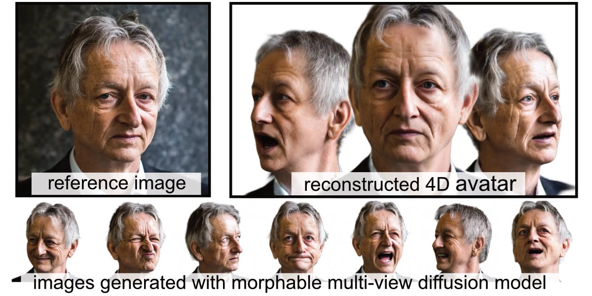
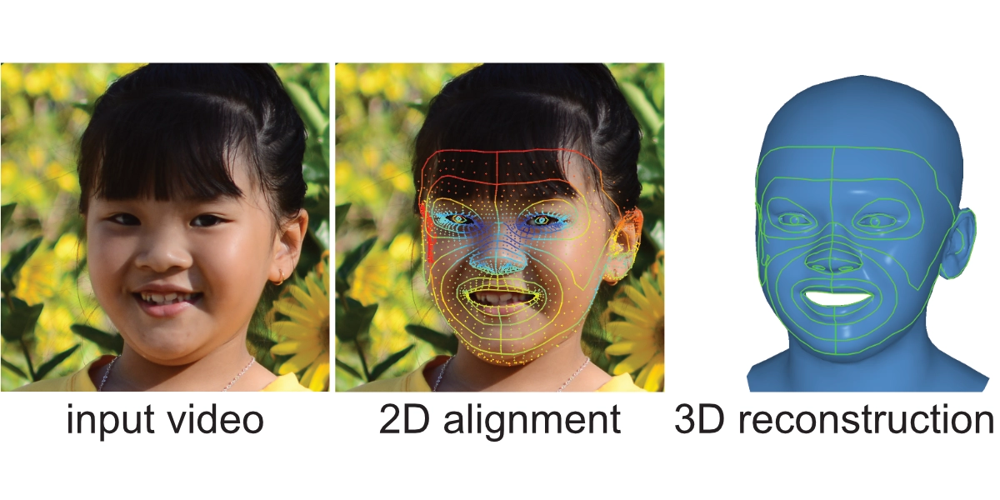
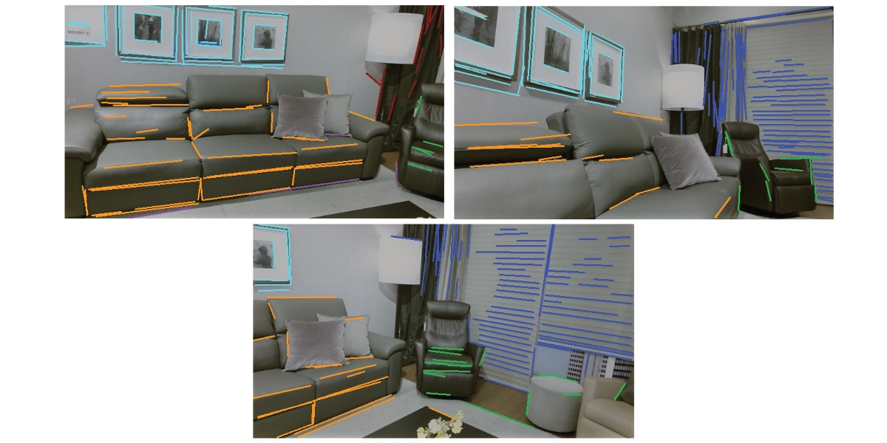

Hi!
I am a PhD student (Computer Science) at the University of Toronto under the supervision of David Lindell, working on 4D generative models with a focus on digital humans.
I will be joining Meta Reality Labs (Pittsburgh) for an internship starting in June.
Prior to this, I was employed at LG Electronics as an AI Research Scientist, working on 3D human face reconstruction and animation.
I completed my BSc. (Mechanical Engineering) and MSc. (Robotics) at ETH Zurich, specializing in computer vision and control. Previously, I conducted research at the Autonomous Systems Lab at ETH under the supervision of Roland Siegwart and the Toronto Intelligent Systems Lab at U of T under the supervision of Igor Gilitschenski.
My research interests are 3D computer vision, 4D generative AI and human face animation.

Publications
-

CAP4D: Creating Animatable 4D Portrait Avatars with Morphable Multi-View Diffusion Models
Felix Taubner, Ruihang Zhang, Mathieu Tuli, David B. Lindell
CVPR 2025 [Oral]
-

3D Face Tracking from 2D Video through Iterative Dense UV to Image Flow
Felix Taubner, Prashant Raina, Mathieu Tuli, Eu Wern Teh, Chul Lee, Jinmiao Huang
CVPR 2024
-

LCD - Line Clustering and Description for Place Recognition
Felix Taubner, Florian Tschopp, Tonci Novkovic, Roland Siegwart, Fadri Furrer
3DV 2020